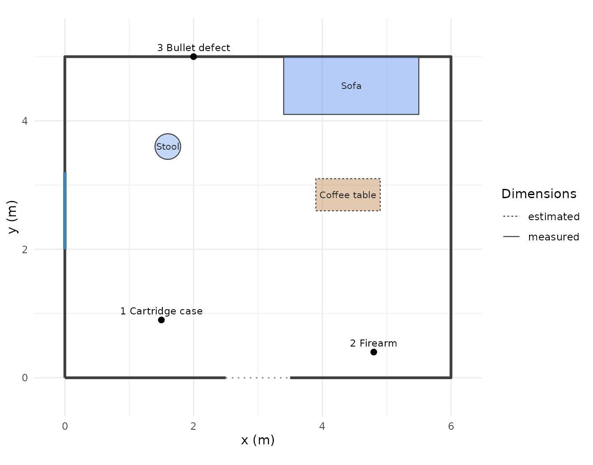
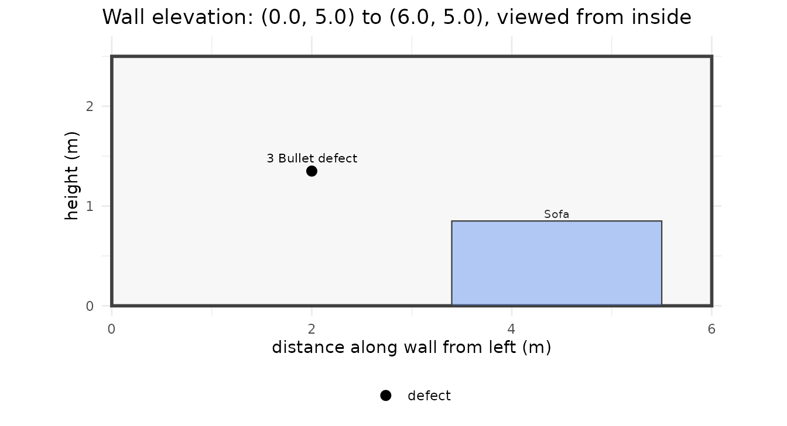
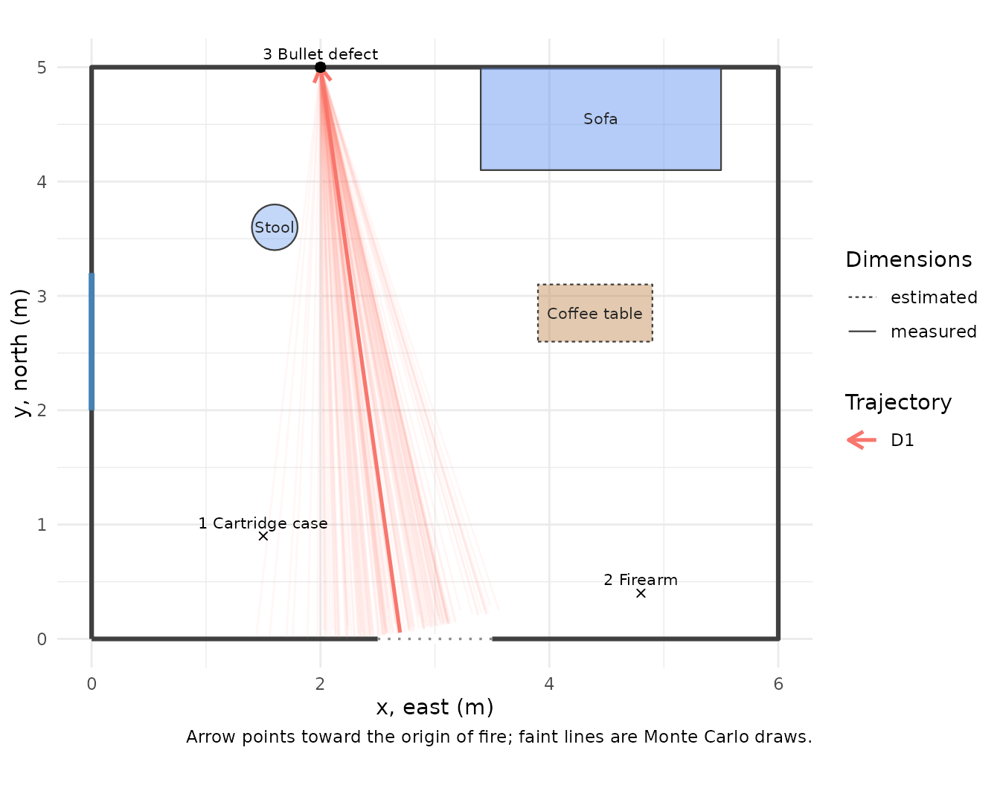
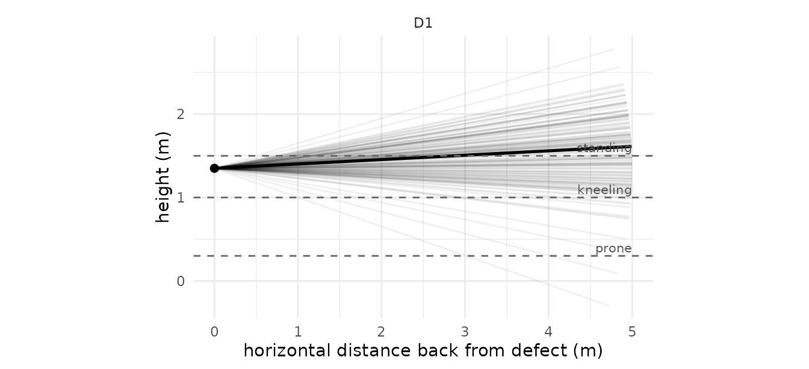
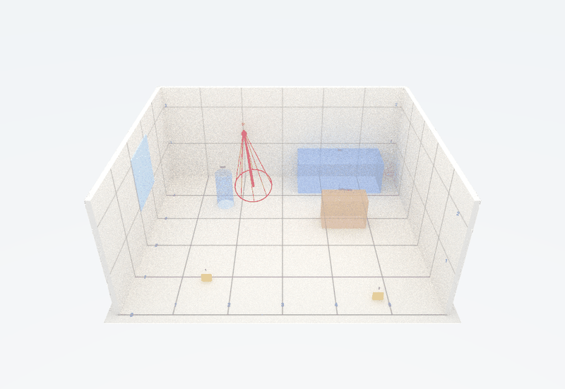

This vignette takes a single, small scene from field measurements to a finished report. You do not need to know R beyond copying the code blocks and changing the numbers. Everything here runs in a few seconds, except the 3D rendering at the end, which is optional.
What forensicR does. It turns the measurements a crime scene investigator already takes (distances from walls and corners, defect dimensions, rod angles) into to-scale diagrams, shooting reconstructions with honest uncertainty, and a report in Word, PDF or HTML. It does not replace your agency’s forms or your judgement; it makes the geometry reproducible and the uncertainty explicit.
1. The scene
A living room, 6 m by 5 m. One shot was fired; one cartridge case, one firearm and one bullet defect in the north wall were documented. We use metres throughout (any unit works as long as you are consistent), and a coordinate frame where x runs east, y runs north, and z is height above the floor. The south-west corner of the room is the origin (0, 0).
The room
room_rect() builds a rectangular room from its south-west corner and its size. Doors and windows are added with opening().
2. Evidence locations from your measurements
In the field you rarely measure x and y directly. You measure along a reference line and offset from it (baseline method), or distances to two fixed points (triangulation), or an angle and a distance from a total station (polar). forensicR converts each of these to the same x, y frame.
Here the baseline runs along the south wall, from corner A at (0, 0) to corner B at (6, 0). Each item is recorded as “distance along the baseline from A” and “perpendicular distance into the room”.
evidence <- coords_baseline(
along = c(1.5, 4.8), # distance from corner A along the south wall
offset = c(0.9, 0.4), # distance into the room
origin = c(0, 0), end = c(6, 0),
id = c("1 Cartridge case", "2 Firearm")
)
evidence
#> # A tibble: 2 × 6
#> id x y z type method
#> <chr> <dbl> <dbl> <dbl> <chr> <chr>
#> 1 1 Cartridge case 1.5 0.9 NA evidence baseline
#> 2 2 Firearm 4.8 0.4 NA evidence baselineThe bullet defect is in the north wall. It was located by triangulation from the two north corners, and its height was measured: 1.35 m. The z argument records the height and type = "defect" tells the plots to draw it as a bullet defect.
defect <- coords_triangulation(
d1 = 2.0, d2 = 4.0, # distances to the two reference points
p1 = c(0, 5), p2 = c(6, 5), # north-west and north-east corners
side = "right", # inside the room when walking p1 -> p2
id = "3 Bullet defect", z = 1.35, type = "defect"
)
defect
#> # A tibble: 1 × 6
#> id x y z type method
#> <chr> <dbl> <dbl> <dbl> <chr> <chr>
#> 1 3 Bullet defect 2 5 1.35 defect triangulation
scene <- rbind(evidence, defect)Check yourself. If a triangulation cannot close (the two distances do not reach each other) you get a warning and NA, never a silently wrong point.
3. Furniture, as it is measured
Objects are schematic boxes: a footprint and a height. The most natural way to place something that stands against a wall is along_wall(): which wall, the distance from the wall’s left end (as you see it standing inside the room), its length along the wall and its depth into the room.
furn <- rbind(
along_wall(walls, "north", from = 3.4, length = 2.1, depth = 0.9, id = "Sofa", type = "sofa"),
furniture("Coffee table", "table", x = 3.9, y = 2.6, width = 1.0, depth = 0.5,
measured = FALSE), # estimated size: drawn dashed
furniture("Stool", "chair", x = 1.6, y = 3.6, diameter = 0.4, shape = "circle")
)
furniture_table(furn)
#> # A tibble: 3 × 7
#> Object Type Footprint Height `Position (x, y)` Angle Dimensions
#> <chr> <chr> <chr> <chr> <chr> <chr> <chr>
#> 1 Sofa sofa 2.10 x 0.90 0.85 5.50, 5.00 180 measured
#> 2 Coffee table table 1.00 x 0.50 0.75 3.90, 2.60 0 estimated
#> 3 Stool chair circle, 0.40 dia. 0.90 1.60, 3.60 0 measuredHeights and colours come from furniture_catalogue(); pass height =, colour = or alpha = to override them. Objects are semi-transparent by default so nothing behind them is hidden.
4. The sketch
plot_scene(scene, walls = walls, furniture = furn)
This is a measurement check as much as a diagram: if a point lands outside the room or inside a wall, a measurement or a conversion is wrong. Fix it now, before anything is built on it.
Each wall can be drawn face-on as well, with the heights of what is on it:
plot_wall_elevation(wall_from_room(walls, "north"), scene, walls = walls, furniture = furn)
5. One trajectory, with its uncertainty
A trajectory rod was placed in the defect. The angle finder read 3 degrees downward and the protractor, relative to north, gave a flight azimuth of 352 degrees (the bullet was travelling almost due north when it struck the wall). Rod readings are commonly taken to be good to about 5 degrees; that uncertainty is part of the trajectory from the start.
t1 <- trajectory_from_angles(
anchor = c(defect$x, defect$y, defect$z), # where the bullet struck
azimuth_deg = 352, vertical_deg = -3, # direction of flight
se_azimuth = 5, se_vertical = 5, # angular uncertainty
id = "D1"
)
t1
#>
#> ── Trajectory D1 (angles at defect)
#> Anchor (x, y, z): 2, 5, 1.35
#> Flight azimuth: 352° ± 5° (clockwise from north)
#> Vertical angle: -3° ± 5° (downward flight)Where could the shooter have been?
A trajectory is a line. To turn it into a position you have to assume a muzzle height. origin_zone() projects the line back until it reaches each assumed height and gives the horizontal distance from the defect, with an interval that comes from the angular uncertainty.
origin_zone(t1, heights = c(standing = 1.5, kneeling = 1.0), max_distance = 6,
furniture = furn)
#> # A tibble: 2 × 9
#> position height horizontal_distance hd_lower hd_upper x y p_reachable
#> <chr> <dbl> <dbl> <dbl> <dbl> <dbl> <dbl> <dbl>
#> 1 standing 1.5 1.60 0.615 5.17 2.21 3.42 0.624
#> 2 kneeling 1 3.62 1.70 5.91 2.46 1.43 0.105
#> # ℹ 1 more variable: p_in_furniture <dbl>Read this with the p_reachable column. For a nearly horizontal shot with 5 degrees of vertical uncertainty, a third of the Monte Carlo draws never reach standing height within the room: the data genuinely do not pin the distance down, and the report should say so rather than quote a single number. Positions inside furniture are excluded automatically.
Seeing the uncertainty
plot_trajectories(t1, view = "plan", points = scene, walls = walls, furniture = furn,
back = 5)
The thick line is the central estimate; the faint fan is what the stated uncertainty allows. The side view shows why height matters:
plot_trajectories(t1, view = "elevation", back = 5)
6. The evidence log
A minimal chain of custody, kept next to the report. Photos are hashed at the moment they are logged so the report can show that the images are the ones collected.
log <- evidence_log("2026-000123", "Example County Sheriff's Office")
log <- log_item(log, "1", "Cartridge case, 9 mm Luger", location = "Point 1",
collected_by = "Investigator A", packaging = "Paper envelope, sealed")
log <- log_item(log, "2", "Pistol, 9 mm", location = "Point 2",
collected_by = "Investigator A", packaging = "Firearm box, zip-tied")
log <- log_custody(log, "2", "submitted to lab", from = "Investigator A", to = "State lab")
log
#>
#> ── Evidence log: case 2026-000123 ──
#>
#> Agency: Example County Sheriff's Office
#> 2 items, 3 custody events7. The report
One template renders to Word, PDF and HTML. You pass the objects you built; sections whose object is missing print a placeholder instead of failing. Every output ends with a one-line note of the forensicR version used.
render_scene_report(
output_dir = "case-2026-000123",
formats = c("docx", "pdf", "html"),
params = list(
case_id = "2026-000123",
agency = "Example County Sheriff's Office",
investigator = "Investigator A",
narrative = "Single-family residence, living room. One bullet defect in the north wall.",
points = scene, walls = walls, furniture = furn,
shooting = list(trajectories = list(t1), heights = c(standing = 1.5, kneeling = 1.0),
max_distance = 6),
evidence = log,
scene3d = TRUE # adds the 3D view (see below)
)
)The Word file is meant to be edited: paste in your agency header, add photographs, adjust wording. The numbers and figures come from the code, so re-running after a corrected measurement regenerates everything consistently.
8. Optional: the scene in 3D
With the rayrender package installed, the same objects render as a schematic, to-scale 3D model. With rgl, the HTML report gets an interactive version you can rotate. Both are optional dependencies.
render_scene_3d(walls, scene, t1, furniture = furn, file = "scene3d.png", view = "dollhouse")
Dollhouse view: south wall removed, numbered floor grid, bullet defect at its measured height, trajectory rod with its uncertainty cone.
The rendering is deliberately schematic. A demonstrative exhibit must be accurate to scale and must not add detail that was not measured, so there are no realistic textures, no blood, no bodies: boxes, discs, rods and numbers.
Where to go next
-
vignette("scene-mapping"): the three measurement methods, conventions, walls that are not rectangles, elevations, exporting points. -
vignette("shooting-reconstruction"): impact angles from defects, the three ways to establish a trajectory, convergence of several shots, objects on the path, segmented paths through intermediate targets. -
vignette("reports-and-3d"): everything the report template accepts, customising it, the 3D views and the interactive widget.